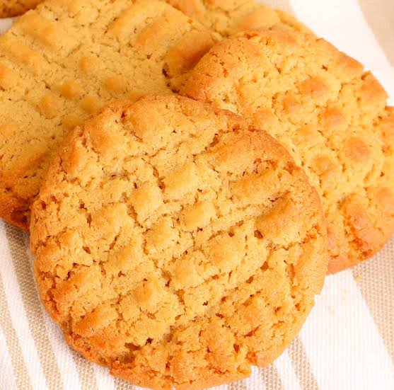

Galletas de mantequilla de maní

Las galletas de mantequilla de maní destacan por su intenso sabor y su textura suave y ligeramente crujiente. Son muy populares por su sencillez y porque requieren pocos ingredientes. Además, puedes acompañarlas con leche, café o chocolate caliente para disfrutar aún más de su sabor.